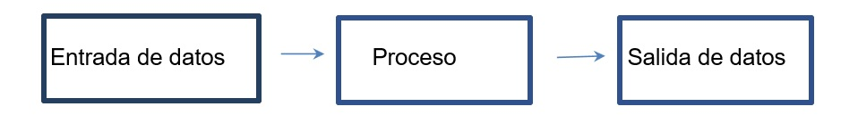

1.5.2 Técnicas y algoritmos usados por los métodos cuantitativos.
Algoritmo
Es un método para resolver un problema mediante una serie de pasos definidos, precisos y finitos.
Características de un algoritmo:
- Debe ser preciso e indicar el orden de realización de cada paso.
- Debe estar definido. Si se sigue un algoritmo dos veces se debe obtener el mismo resultado.
- Debe ser finito. Si se sigue un algoritmo, se debe terminar en algún momento.
Tipos de algoritmos:
Algoritmos cualitativos: son aquellos en los que se describen los pasos utilizando palabras.
Algoritmos cuantitativos: son aquellos en los que se utilizan cálculos numéricos para definir los pasos del proceso.
Tipos de algoritmos según su función:
Algoritmo de ordenamiento: es un algoritmo que pone elementos de una lista o un vector en una secuencia dada por una relación de orden.
Algoritmo de búsqueda: es aquel que está diseñado para localizar un elemento con ciertas propiedades dentro de una estructura de datos [9].
Partes típicas de un algoritmo:

Elaboración propia
Los algoritmos se pueden representar mediante diagramas o textos.
Diagramas. Son esquemas que permiten realizar los procesos y su organización con los cuales se llega a la solución de un problema.
Texto. Los algoritmos se pueden representar mediante frases que representen los procedimientos que den la solución [9].